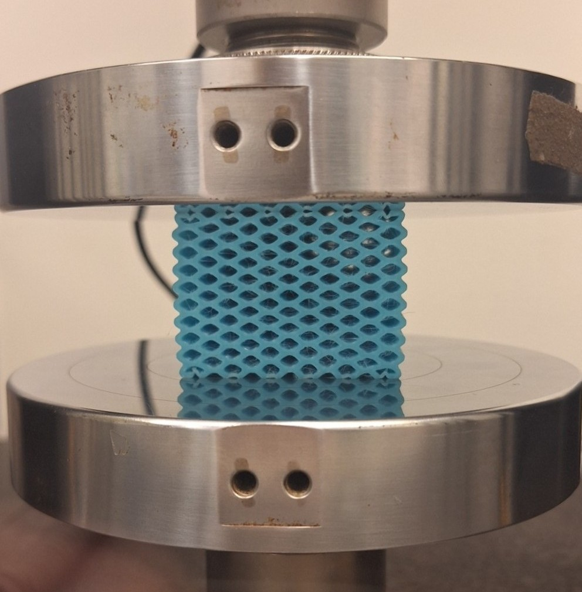
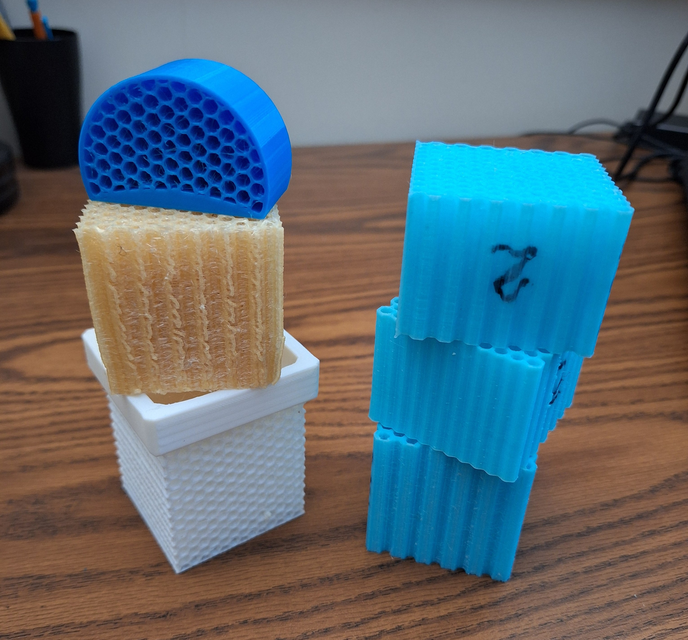

SHOCK-ABSORBING ROCKET FOOT
As part of the Georgia Tech Propulsive Landers program, this project develops TPU landing feet for the team’s 70 kg self‑landing rocket to absorb impact forces during touchdown. I led this effort alongside our vice lead, guiding the team toward a material‑based shock absorber built around a honeycomb lattice that could deform predictably under load while remaining lightweight and easy to manufacture. The feet are sized specifically for the 70 kg lander configuration and mount directly to the box‑tube landing legs. The final foot design is still in progress, with full‑scale printing planned once testing and FEA validation are complete.
Under our direction, the team iterated across more than 20 TPU lattice variants, adjusting wall thickness and cell geometry to tune stiffness and energy absorption. We 3D‑printed TPU samples and collected mechanical testing data using an Instron setup, and I analyzed the results in MATLAB with a focus on maximizing the area under the stress–strain curve, a direct measure of impact energy absorption. The final foot geometry bolts to the lander’s legs, and FEA was used to verify that the structure interacts correctly with the leg during compression and off‑axis loading.
This project demonstrates how lattice geometry, TPU material behavior, and off‑axis loading influence impact performance in a practical landing‑gear application. The resulting design tolerates up to ±15° off‑axis touchdowns and provides a tunable, material‑driven approach to shock absorption that complements the lander’s fixed aluminum landing gear system.


